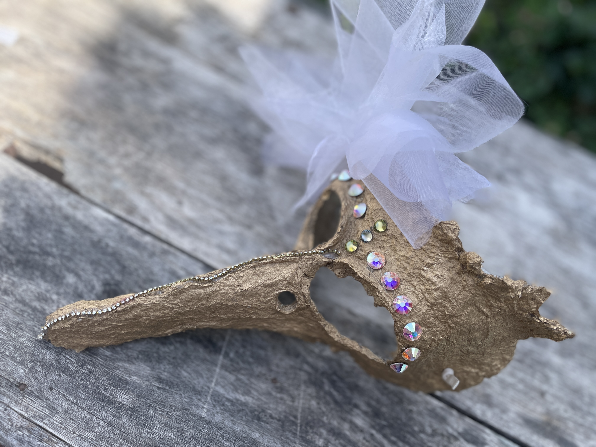
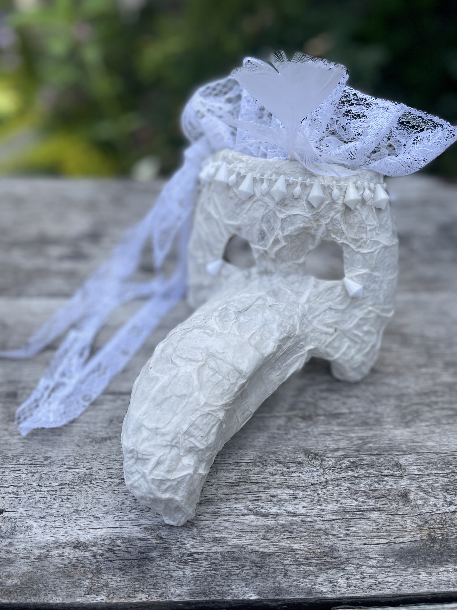
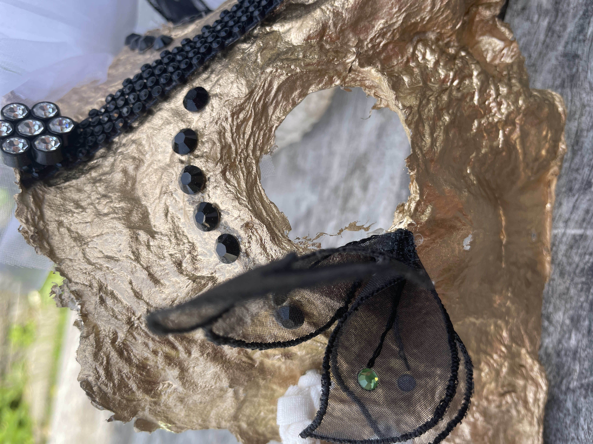
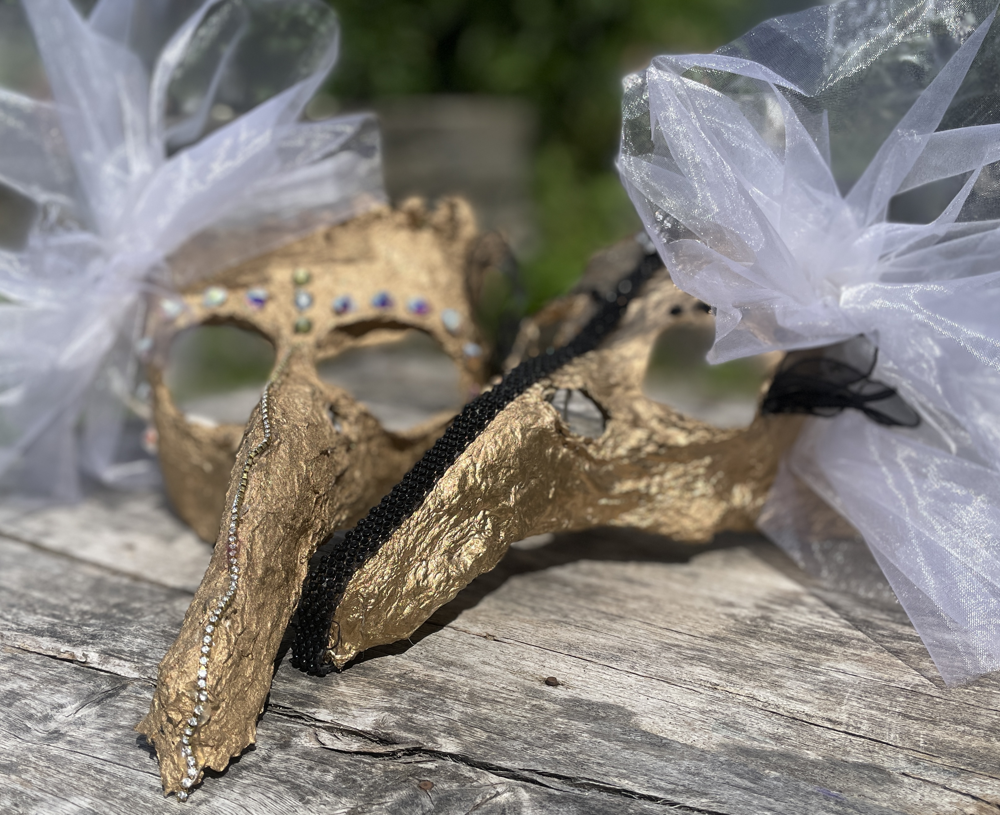

Gestaltung
Kreative Begleitung
Kreativtraining mit gestalttherapeutischem Hintergrund. Die Maske trägt alles und transportiert unbewusst das nach außen, was in dir selbst lebt.
Material: Ton, Papier, Farbe und Material zum Schmücken. Der Gestaltprozess begleitet dein inneres Kind, die Formgebung, Farbe und Materialerfahrungen. Nach der Vollendung erhält die Maske einen Namen — eine persönliche Namensgebung als Ausdruck ihrer Einzigartigkeit.
Die fertige Maske wird in einer Aufbewahrungsbox verwahrt — ein Zeichen der Wertschätzung für dein Werk.

Entstehungsprozess



Soziale Komponente: Gemeinschaftserlebnis, Sprache, Kreativität, Hilfestellung, Dankbarkeit, Toleranz und gegenseitige Unterstützung.
Assoziation zu Vogel: Leichtigkeit des Fliegens, Vergänglichkeit und Fortpflanzung. Nestwärme und Schutz — Ei, Geburt und letzter Flug. Ein Symbol für die Reisen unserer Seele.
Erinnerungsbilder: Ein gemeinsames Fotobuch bewahrt die Momente fest, die beim gemeinsamen Schaffen entstanden sind — eine bleibende Erinnerung an die Magie dieser Zeit.
Die Maske trägt alles, was in dir lebt — nach außen, sichtbar, wertvoll.Silvia Föger